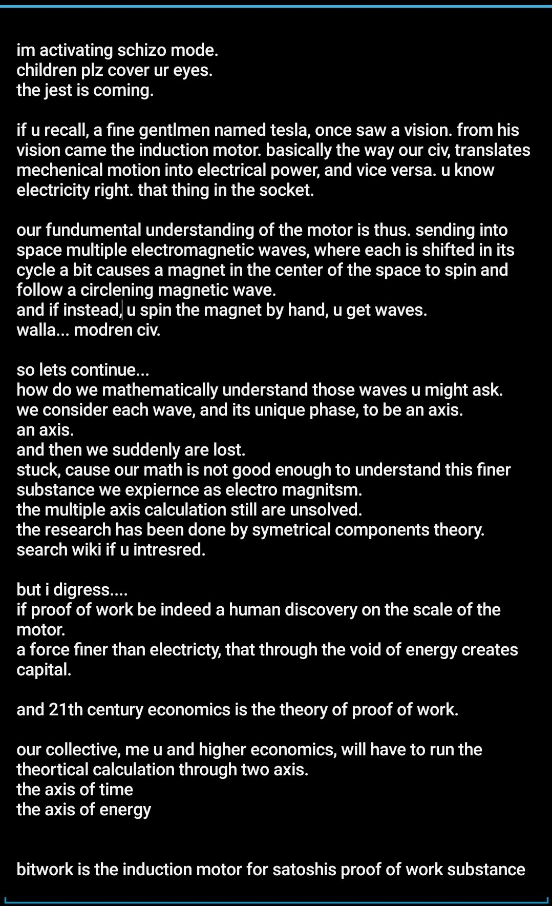
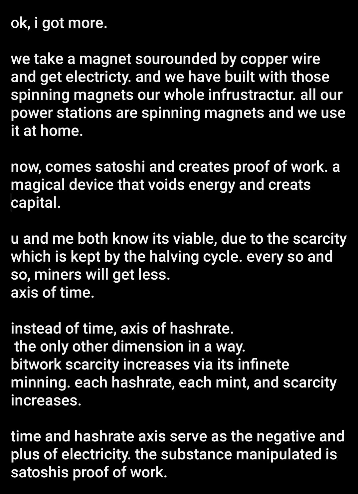
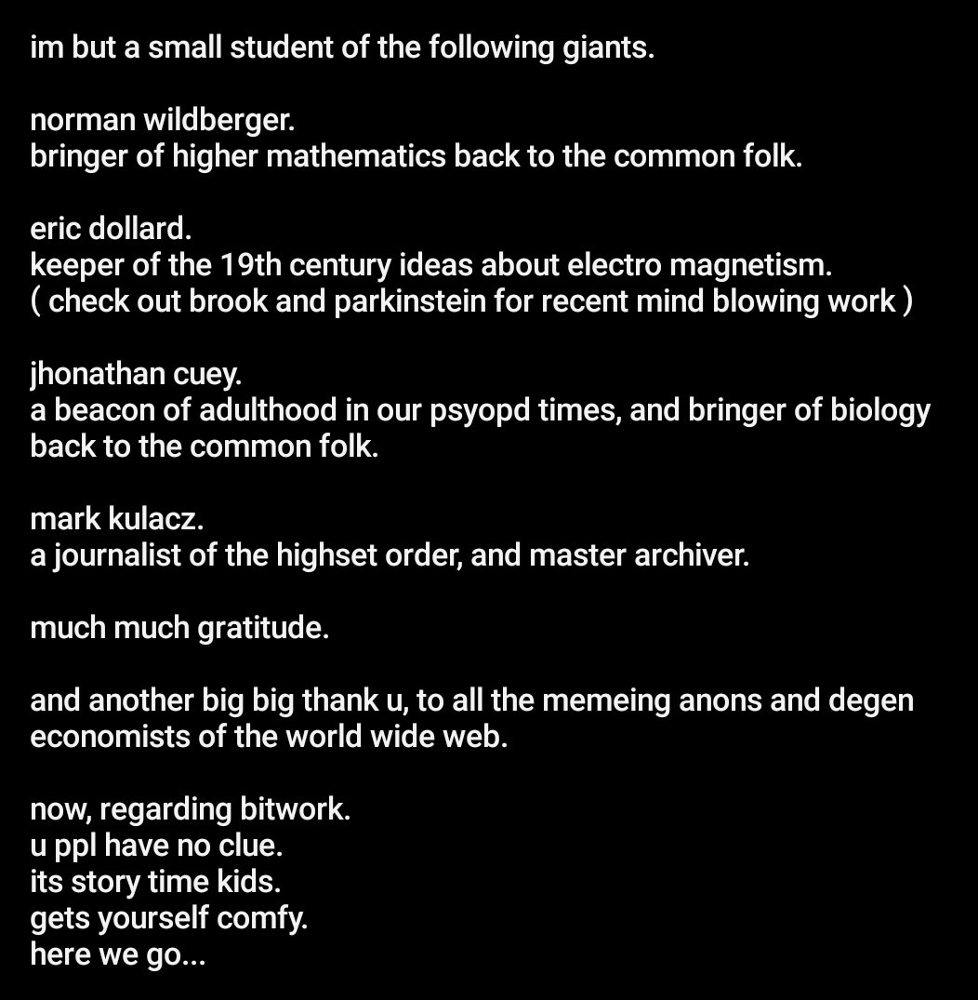
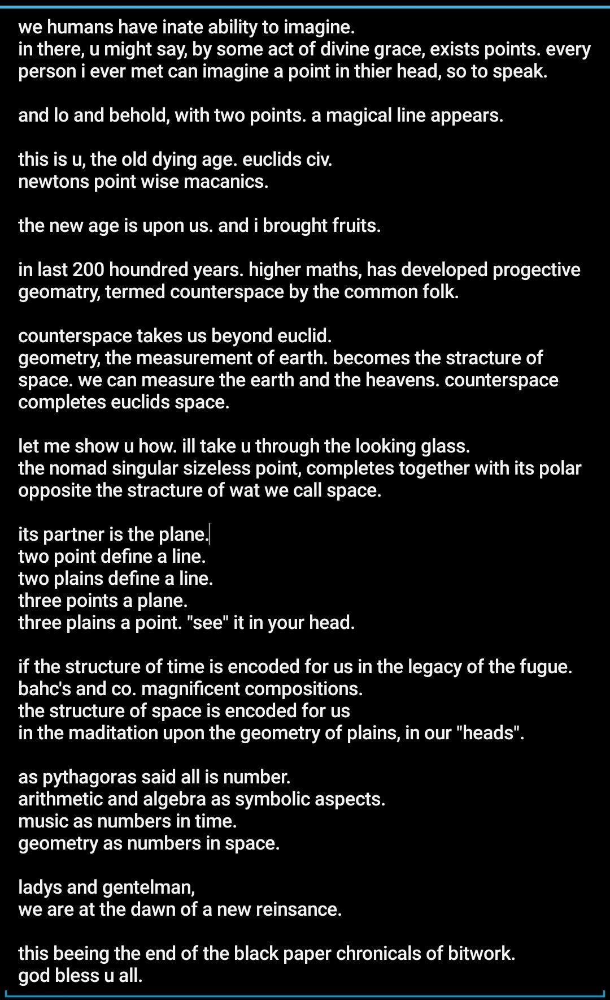

What is Bitwork? and what are perpetual PoW tokens?
Perpetual Proof of Work Bitwork is a minting machanism for Atomicals fungible tokens.
Atomicals team worked on it and deployd it on Bitcoin mainnet around feb of 2024.
A regular mint of tokens on either BRC-20, Atomicals, or Runes is
a simple msg on the blockchain basically saying "plz gib".
According to the details of the specific token, you are credited with an amount.
The supply, is obviously, limited.
Then, Atomicals introduced to thier ecosystem, a new requirment: Bitwork.
Now, it is not enough just to post a msg of a mint.
You also have to prove you have preformed a proof-of-work operation.
The difficulty of your proof-of-work is determined by the token details.
Tokens have been launched under such conditions.
And some are even top market cap in Atomicals eco system.
and then came....
what I consider the real genius of the whole idea
non capped supply tokens.
unlimited supply, u say?
nah.... can't be....
how can it work??????
let's take a short detour.... and discuss motherchain
21,000,000 capped bitcoin
right? well, not actually.
its not like the source code has the number 21,000,000 stored anywhere.
satoshi gave us different numbers.
he gave us,
210,000 of time.
and 50 of btc.
50 btc was the first reward for blocks.
then every 210,000 blocks, we halve it.
wait... didn't u just say 210,000 of TIME earlier, and
now u saying 210,000 of BLOCKS?
u r right my friend.
this is, where part of satoshis genius shines through.
u see satoshi also stated the diffculty adjustment scheme.
in order to get his token,
btc, u have to do proof of work according to some difficulty.
and satoshi decided:
the new difficulty should be such that all the PoW network combined, has just enough power, to
proof of work a block every 10 minutes.
so by introducing a difficulty adjustment concerned with time.
satoshi locked bitcoin into the axis of time.
satoshi locked scarcity into the axis of time.
satoshi is manipulating scarcity across the axis of time.
scarcity is the name of the game.
satoshi shows us, that proof of work accross the axis of time, manifests scarcity.
scarcity is all.
this is why any one of us is here.
bitcoins scarcity is halving in time.
and look where we at.
it has completely revolutionized our world.
now, lets return to our previous question.
unlimited supply.
how can an unlimited supply token have any sort of scarcity?
that's, the genius of perpetual Bitwork tokens.
The following two changes to regular PoW tokens, create prepetual PoW tokens:
- unlimited supply
- each mint, PoW difficulty increases
With those two changes... we can see something very interesting.
This time instead of scarcity being tied to the axis of time.
It's seems to be tied to the axis of hashrate... watever that means.
All we see, is that with each mint, which by itself requires PoW,
an additional element is at play.
Next mint is harder, caus difficulty increased, thus its scarcer.
Scarcity is being halved.
Same as with satoshis bitcoin.
But now with the scarcity being halved not via a 4 years cycle,
but by an amount of mints already minted.
The PoW provided to such mints, increases the scarcity.
Just like bitcoin increases its scarcity by every block getting closer closer
to the next halving.
Bitwork increases its scarcity with each mint, making the next reward harder to get.
( in bitcoin the reward gets halved, in bitwork the reward gets harder to get )
So, we have a similiar machanism at play, in which PoW is used directly to increase scarcity.
PoW is used by bitcoin to increase scarcity.
PoW is used by bitwork to increase scarcity.
bitcoin is locked in time
bitwork is locked in hashrate
plz notice, bitcoin has all the bells and whistles.
bitwork is just riding on top of bitcoin's bookkeeping.
a pow over pow overlay.
the end.
===========================
black papers chronicals of bitwork




===========================
newsletter
originaly published: feb 24
PS.
In regard to Infinity.
I currently think the fee flaw is a minor issue.
The major issue being the choice of halving factor.
In a a prepetual pow token deployment.
You decide the halving factor.
Same as satoshi did with bitcoin.
I think Infinity's halving factor is like a 50 year halving cycle in bitcoin. too much.
Einsof is an experiment with a lower hashrate halving cycle.
Your PoW in Einsof, generates more scarcity compared to in Infinity.
PS2.
The newsletter and the black paper chronicals, where written ~10 months apart.
They came, like a lightining bolt from a clear blue sky.
They came, after a failed meditation on the concept of bitwork.
And I say failed, becuase I was even more confused after the meditation.
And from such a storm of confusion, those writings came.
I wrote them under considerble emotional stress.
And they have lingered in my mind quite a while after.
They were very strong and very possesive.
Bitwork, drove me crazy, in a way.
But you know.
It's not my first time around the block.
PS3.
Projective Geometry - CounterSpace was the major
contributor to figuring out the polarity of bitcoin and bitwork.
The whole bitcoin bitwork thesis comes from the harmony of points and planes.
Bitcoin and Bitwork harmonize each other,
as units in the space of pow driven scarcity.
=====
My personal opinion regarding bitwork is:
It is a very interesting economical experiment.
Very fitting of our times.
I personally mined infinity and einsof.
And bitwork has provided me, much food for thought.
=====
If u want to reach me.
Im currently using twitter as @jester_nutrak.